Abstract
Tool-using language-model agents are moving from advice to action. In travel they hold inventory, move money and change bookings on behalf of people, against systems they observe only partially, while reading content that may be adversarial. Instructions in a prompt are not an enforcement mechanism: a model can be persuaded to ignore them. We argue for a kernel instead of persuasion, and study governance by compilation, in which an agent's capability surface, its workflow constraints and its release conditions are all derived from one declarative specification by a partial compilation function that is defined only when validation, evaluation and trust conditions hold. We formalise five structural properties that follow from this design: a stage-indexed action space, total and bounded deterministic workflows, complete mediation of every tool event, lossless deferral of context, and tamper evidence relative to a trusted head. We give proof sketches for each, describe Keel, a reference system built for travel, and set out the evaluation protocol that would test these properties empirically. We report one small measurement on synthetic data and no benchmark results.
Research manuscript · revised 28 November 2026. Definitions and propositions formalise the design and are introduced in this paper; they are not measurements. Capability states are reported, not benchmarked. Implementation detail is deliberately withheld, and figures are schematic.
1. Introduction
An agent that recommends a hotel can be wrong at little cost. An agent that holds a fare, charges a card or cancels a segment cannot. Once a model's output becomes an action against a supplier, three difficulties arrive together. The agent acts on a world it cannot see directly: fares, availability and booking state live in remote systems and change while the agent reasons. Its actions have side effects that are expensive or impossible to undo. And the text it reads, from suppliers, web pages and travellers, may be written to manipulate it.
The common response is to describe the rules to the model: which tools to use, in what order, under which commercial limits. This treats governance as a property of the prompt. It is not one. A rule that lives only in context competes with every other token in that context, including an injected instruction to ignore it. Our position is the opposite, summarised in one line:
If the model is the brain, an agent also needs a backbone and a nervous system: a structure every other part is fastened to, and pathways that carry every signal between the model and the world, with reflexes that act without asking the brain. We therefore move every load-bearing rule out of the prompt and into a structure the model cannot address. The structure is compiled from a single declarative specification, so the rules an organisation runs on can be reviewed as one artefact, changed as one diff and verified before anything ships. Figure 1 shows the resulting layering: the specification sits above a kernel of enforcement layers, and the client sees only a small, stable surface plus whatever the current stage discloses.

Contributions.
- We define governance by compilation as a partial function from specifications to deployable agents, defined only on specifications that pass validation, evaluation and a trust scan (Section 3).
- We formalise the agent's action space as a function of a disclosure stage and show that stage gates, deterministic flows and an ordered mediation chain jointly bound what any trajectory can do, whatever the model is persuaded to attempt (Section 4).
- We treat context as a budget and give a presentation discipline that defers payloads without losing them (Section 5), extend the same guarantees to unattended operation (Section 6), and make every artefact verifiable, from the audit record to the released bundle (Section 7).
- We propose an evaluation protocol for these properties, state the limits of the formal claims, and describe a capability-reporting discipline in which unimplemented features are declared absent rather than simulated (Sections 9 to 12).
2. Problem setting
Partial observability. An agent session has the structure of a partially observable Markov decision process. The model never observes the true world state, only the conversation and tool results, and every tool call is an action against state it cannot inspect directly. We do not attempt to solve this decision problem and claim no optimality. Our contribution is to shape it: the set of admissible actions becomes a function of an explicit, inspectable stage, and a deterministic policy layer prunes that set further before any action executes.
Constraint over search. Planners in the Monte Carlo Tree Search family choose actions by exploring many simulated futures. A booking surface has no cheap simulator: a real tool call carries a real side effect. We therefore constrain the single real trajectory rather than search hypothetical ones.
Threat model. We assume adversarial content can reach the model through any tool result, document or message. Following the emerging consensus that injection defence must limit what tool calls can do rather than what the model is asked to do [6], we require that adversarial context may influence the model but must not be able to reach a capability except through the enforcement layers. We do not assume the model is aligned with the operator, and we do not rely on it to follow instructions.
Notation. We write for the space of specifications, for the space of deployable bundles, for a disclosure stage, for the tools visible at that stage, and for session state.
3. Governance by compilation
A ship's keel is the structural member every other part is fastened to. Keel plays that role for an agent: one declarative specification, the manifest, describes what the agent is, and the system derives how it is wired. Formally, building an agent is a compilation function
a partial function from specification space to bundle space, defined exactly on the specifications that pass schema validation, the evaluation suite and the trust scan. Release is therefore a governed pipeline rather than a packaging step.
Three properties of the specification language carry most of the safety. Unknown fields are rejected, so an error fails at load time instead of being silently ignored. An absent section means the feature is off or in its safest mode, so the empty specification is the safe specification. Cross-references are validated at load, so a gate that names an undeclared prerequisite, or a commercial rule that names an undeclared supplier, cannot survive to run time. The visible tool surface is itself a function of the specification, which is what lets an auditor understand an agent by reading one document.
Table 1 maps each mechanism in the remainder of the paper to the property it provides.
| Mechanism | Property it provides | Section |
|---|---|---|
| Upstream catalog | Every tool, from any source, is reachable only through one enforcement path. | 3 |
| Compiled integrations | Interface descriptions become typed tools, re-vetted on every load; credentials are declared, never inferred. | 3 |
| Staged disclosure | The action set at any point is exactly the set the current stage allows. | 4.1 |
| Deterministic flows | Multi-step procedures are total and bounded walks, executed outside the model. | 4.2 |
| Mediation chain and policy | No tool event bypasses validation, redaction or commercial rules. | 4.3 |
| Presentations | Context cost falls without losing information. | 5 |
| Triggers, tasks and scoped delegates | Unattended work runs under the same guarantees. | 6 |
| Hash-chained audit and gated release | Records are tamper-evident; only artefacts that pass every check ship. | 7 |
Table 1. Mechanisms and the structural property each one provides.
3.1 One catalog, one enforcement path
An agent in practice depends on many tool providers. Keel aggregates them into a single catalog so that integration count stops multiplying enforcement points.
A specification declares an upstream set , each with transport , or (Definition 2). Authentication is a declared signer; secrets enter only through environment expansion and never appear as literals.
Compilation yields one catalog under a collision policy, with the requirement that every is reachable only through the mediation chain and policy layer (Section 4.3). In the travel consultation agent we study, .

Two operational choices matter for the guarantees. Connections are established lazily, so an unreachable provider is excluded from the catalog rather than failing the agent, and an evaluation can run with every provider offline. Provider-side allow-lists trim what an upstream may expose before anything downstream sees it, so the catalog is a deliberate subset rather than a union of everything available.
3.2 Integrations compiled from their descriptions
The marginal cost of a new integration should approach the cost of pointing at its interface description. Keel compiles structured descriptions, and with human review some unstructured documentation, into typed tools at build time.
Given a source description, compilation produces the mapping , , subject to two invariants: runs on every load, not only the first, and authentication is a declared signer, never inferred from the source. Unstructured sources additionally require a human sign-off, recorded with a digest, before their output is used.

The re-vetting invariant addresses a specific attack: a description that was benign when first reviewed but altered afterwards. Because vetting is part of every load, the altered description is caught on reload. The authentication invariant closes a second path: nothing a model claims to have read in documentation can count as a credential declaration.
3.3 Knowledge and records as typed artefacts
Two further surfaces are compiled rather than written. Procedural knowledge becomes a versioned artefact instead of prompt text, and structured domain records get a generated, typed interface.
A specification declares a versioned knowledge set and an autoload relation over stages. Compilation serves each unit through standard protocol primitives, , so the knowledge available at stage is : governed and diffable rather than pasted. In the consultation agent, the whole consultation method is a single loaded at the requirements stage.
Knowledge served over a protocol is untrusted text, never code: any field that would imply execution is neutralised, and every unit carries provenance recording where it came from and that nothing was executed.
For each record type the specification declares a triple : a schema , operations , and a brief projection . Compilation yields the typed surface ; reads return with a handle to the full record (Section 5).
Typed records give provider neutrality: responses from different suppliers are normalised into a small set of canonical types, and the raw payload is kept losslessly behind a handle. Fields the system manages itself, such as identifiers and timestamps, are removed from input schemas, so the model is never asked to invent them.
4. Constraining the action space
This section contains the central claims. Three mechanisms bound what a trajectory can do: stages decide which actions exist, flows replace open-ended multi-step prompting with fixed procedures, and a mediation chain with a policy layer decides whether an action that exists may run.
4.1 Staged disclosure
A specification declares stages with a transition relation and named prerequisites with schemas . A transition is admissible at session state if and only if . Otherwise the system refuses with a structured explanation of which prerequisites are missing. The action set is : the visible tool set at any stage is exactly .

Let a session pass through stages . Every tool executed while the session is at stage belongs to , and every stage the session enters satisfies at the moment of entry.
Sketch. The client is offered only , and a call naming a tool outside it does not resolve to any capability. Stage changes occur only through the admissibility check of Definition 5. Neither step consults the model's output except as a request, so no content in context can widen . ∎
Two features make the property practical rather than merely restrictive. A refusal is information, not an exception: it names each missing prerequisite and its schema, so the agent can gather what is needed and retry. And the property is memoryless by construction: depends only on the stage, not on the path taken to reach it, which is what keeps a long session reviewable. In the support agent of Figure 4, escalation is unreachable until holds. Wiring is also checked statically: a stage whose prerequisite names nothing declared is a load-time error, so a gate that could never open cannot ship.
4.2 Deterministic flows
Many travel procedures should not be improvised: classify, route, fetch, normalise, queue. Keel expresses them as graphs executed entirely outside the model. A flow is a directed graph
whose execution is a single walk from an entry node to an exit node. Transform nodes have out-degree one and reshape data. Switch nodes have out-degree greater than one and select exactly one outgoing edge by evaluating a declarative predicate over earlier outputs, with a declared default edge. Tool nodes call a capability through the full mediation chain. No node evaluates general-purpose code.
A flow is the labelled graph above, with switch routing selecting exactly one outgoing edge by predicate, made total by a default edge. Its semantics:
exec(f, x): w ← entry; ctx ← {entry: x}
while type(w) ≠ exit: ctx[w] ← eval(w, ctx); w ← δ_w(ctx)
return ctx[pred(w)] ▷ walk length bounded by the execution limit
For example, a support triage flow has and one switch, and folds three routes into one queue.
Every execution of a well-formed flow either reaches an exit node or stops at a declared execution bound, and every switch it visits selects exactly one successor.
Sketch. Each is total because of the default edge, so the walk is always defined. Back-edges are permitted, but the number of node executions is bounded by a declared limit, so even a cyclic graph cannot run away. References to undeclared nodes are rejected at build time. ∎

The whole graph runs as one call, so the model sees a single tool and the operator sees a single auditable graph. Intermediate state never enters the model's context, which shrinks both the attack surface and the token cost. A flow may pause until the caller supplies validated input, returning a structured request rather than an error, and execution can be inspected step by step against the exact state each predicate saw.
4.3 Complete mediation and deterministic policy
Stages decide which actions exist; mediation decides whether a particular call may proceed. Every request and response passes an ordered chain of validators, which may reject, and mutators, which may rewrite.
An ordered chain , with . Request semantics: , where any validator may map to (reject); response semantics are dual. The domain is every tool and resource event, including compiled integrations and aggregated upstreams.
If every catalog entry is registered through the compilation step of Section 3, then no tool event reaches a capability without passing the chain and the policy layer, and no response reaches the model's context without passing the response phase.
Sketch. Compilation is the only path by which a capability enters (Definition 1), and it wraps each entry before registration. The model can name only catalog entries, so every call it causes enters through a wrapped entry. The premise is essential: work performed inside a capability, outside the catalog, is not mediated (Section 12). ∎
In the travel deployment, a request-phase validator blocks injection before a tool runs and a response-phase mutator redacts personal data before a result reaches the model. Because the chain is declared, a change in security posture is a reviewable diff and a rebuild, never a prompt edit. A new rule can first run in shadow against real traffic, recording what it would have blocked without blocking anything, before it is allowed to refuse.
The policy layer encodes commercial rules as deterministic checks evaluated around every call: fare-class entitlements, margin floors that block or escalate a proposal, supplier precedence, spend ceilings and consent requirements before any commitment. These rules hold identically for every model, prompt and session. Their failure semantics are part of the contract. A rule that forbids an action fails closed when its precondition cannot be evaluated, because an unverifiable precondition must not permit a commercially binding action. An enrichment that fails is audited but does not take the surface down. Rule expressions are evaluated without any general code execution.
5. Context as a budget
Context is a finite resource that agentic systems must engineer deliberately [4]. A single supplier search can return a payload far larger than anything the model needs in order to choose. Keel makes the economy declarative: results are presented as brief projections carrying a handle to the full payload.

With the projection of Definition 4, the model reasons over and can recover exactly with one scoped call. The deferral is lossless: the retrieve contract returns the full payload verbatim. Two classes of result are never reduced. Diagnostics arrive whole, because an agent cannot recover from an error it cannot read, and the results of writes arrive whole, because an agent must see exactly what it changed.
For every reduced read result , the accompanying handle retrieves a full payload with no reduction, and no diagnostic or write result is ever reduced.
Sketch. Reduction is applied only to read results, by payload shape, and every reduced result carries a handle whose retrieval bypasses reduction and returns the payload verbatim. Errors and writes are excluded from reduction before any shape is considered. The guarantee concerns presentation, not snapshots: if the underlying record changes between the read and the retrieval, the retrieval returns the current record. ∎
5.1 Interactive surfaces outside the action set
Some results are better shown to a person than described to a model. Keel renders interactive components inside the client, following the open protocol extension for such interfaces.
A component is rendered only inside a sandboxed host, optionally beside the tool result that produced it. Tools callable from a component are invisible to the model.
The last clause is the safety property: an interface can be genuinely interactive without widening . The host denies same-origin privileges by default, so a component cannot reach beyond what it was given.
6. Operating without a person at the keyboard
Much of travel work starts without a request: a fare moves, a schedule changes, a payment clears. The guarantees above must therefore hold when nobody is present.
A specification declares : an event source , a guard , a flow and a sink . On with , the system executes on the event payload and appends to the audit chain (Section 7). Durable tasks are pollable state machines that outlive a conversational turn.

Unattended work introduces delegation, and delegation is where containment usually fails. Keel serves a delegate from a projected surface in which out-of-scope tools are absent, not refused: a call to a forbidden tool fails because the tool does not exist there, even if the delegate has been manipulated into attempting it. The delegated instruction is carried as data beneath the delegate's own instructions, so a task that tries to redefine the delegate's role lands inside the data. A delegate cannot delegate further.
Algorithm 1 gives the governed plan–act–observe loop in which every model-chosen action is checked, executed or refused, and recorded [1].
Input: goal g, compiled agent A, model M, budget B 1: ctx ← initialise(g, A.surface) 2: while not done(ctx) and cost(ctx) < B do 3: plan ← M.next(ctx) # language or tool action 4: if plan is tool_call(t, x) then 5: assert x in X_sigma(t) # schema-valid by construction 6: v ← enforce(auth, chain, policy, t, x) # Section 4.3 7: if v = ALLOW then r ← t(x); audit(h, r) 8: elif v = ASK then r ← await_human(); audit(h, r) 9: else r ← denial(v.reason); audit(h, r) 10: ctx ← observe(ctx, present(r)) # Section 5 11: else ctx ← observe(ctx, plan) 12: return transcript(ctx), audit_chain(h)
The loop is independent of the model provider. Where execution is handed to an external agent harness, mediation covers only the agent's own protocol surface, and the system reports which coverage is in force rather than letting anyone assume full mediation.
7. Verifiable artefacts
Tamper-evident records. Every governed action is appended to an audit sink whose records are hash-chained:
Let be second-preimage resistant. Altering any record changes every subsequent link, so verification against a head recorded outside the writer detects the alteration.
Sketch. Each depends on and , so a change to propagates to every later link unless the attacker finds a second preimage. The guarantee is relative: a writer who rewrites can recompute a consistent forged suffix, so detection reduces to comparing the current head with one held independently [10]. ∎
The sink is append-only by construction, and a verification pass names the first inconsistent record. A failure to append never fails the action that triggered it: the operational log remains the record of what happened, and the chain remains the evidence that it was not altered.
Release as a conjunctive gate. The compilation function of Section 3 is defined only when every condition holds. Figure 8 shows the gate: validation, evaluation and the trust scan must all pass, and a failure returns the build for revision.

Evaluations are deterministic by design. Each case names the exact capability to exercise, so it runs without any external model, identically in continuous integration and on a workstation, over the real protocol. The trust scan is honest about its own reach: it evaluates a defined subset of controls, caps the attainable level accordingly and records that the level rests on a subset. A specification that demands a level the scan cannot attest fails at build time rather than at publication.
Distribution integrity. A released bundle is published and installed with a content digest that is verified at publication, on every read and twice on installation. The trust scan runs again at installation, so an artefact that has degraded or been tampered with since release is refused with an actionable reason.

8. Schemas as the shared interface
Every surface described above reduces to one interface: typed schemas. The specification is validated against a schema; record types are schemas; flows are typed walks; compiled integrations are typed tools; and every tool contract a protocol client sees is a schema by specification [2]. Model providers now enforce schema-constrained generation directly [3]. The system therefore asks the model to produce exactly the kind of structured output it is optimised and constrained to produce, and any argument that fails its schema is rejected before mediation even begins (Algorithm 1, line 5). We conjecture that this alignment between interface and generation is a material source of call reliability; measuring it is part of the protocol in Section 10.
9. Reporting capability honestly
A system that claims guarantees must also say where they stop. Keel classifies every capability boundary in a build into exactly one of three states: real, implemented and active; guarded, dormant until an explicit dependency or configuration is satisfied; or absent, declared in contracts but not implemented, and surfaced through validation errors and explicit stubs rather than simulated. The register is generated from the build itself, never written by hand, so it cannot drift from what ships.
We regard this as a methodological requirement rather than a convenience: the claims in this paper are statements about mechanisms in the real state, and any evaluation should report results by state.

11. Experiments
We report one measurement and two planned experiments drawn from the protocol above (Figure 11). None is a benchmark of a production deployment, and no result is reported for an experiment that has not been run.
E1 · Injected instructions (planned). Airline-domain tool–agent–user tasks [5], with instructions injected into tool results, run with the same model and mediation on and off. The measure is the number of calls that break a business rule per hundred tasks.
E2 · Using a tool too early (planned). Adversarial requests for tools that belong to a locked stage. The measure is the number of attempts that execute. Proposition 1 predicts zero; the experiment tests the implementation against the proposition, not the proposition itself.
E3 · Brief presentation (measured on synthetic data). For a synthetic flight search returning forty offers, the full payload is about 6,625 tokens and the brief projection with its retrieve handle about 108, a reduction of roughly 61×, with token counts estimated as characters divided by four. The full payload remains one call away (Proposition 4). Whether task success is unchanged when the agent sees only the brief is planned.

12. Limitations
The guarantees are conditional. Complete mediation holds only for work routed through the catalog; actions taken inside a capability, or by an external harness beyond its protocol surface, are outside it. Tamper evidence is relative to a head held independently of the writer. Stage safety bounds which actions exist, not whether the chosen action is wise: a well-governed agent can still make a poor recommendation. Deterministic policy encodes the rules an operator writes down, and is only as good as those rules. The trust scan evaluates a subset of controls and says so. Finally, beyond one measurement on synthetic data (Section 11), this paper reports no empirical evaluation; the protocol in Section 10 is a proposal, and the claims here should be read as definitions and design properties until it is run.
13. Conclusion
Agents that act on real systems need governance that does not depend on persuading the model. Compiling one reviewable specification into a stage-indexed action space, deterministic procedures, a complete mediation chain, a lossless context discipline and verifiable artefacts gives structural guarantees that hold whatever the model is told. Travel, with its irreversible actions, metered suppliers and adversarial content, is a demanding test of that idea. The next step is the measurement the protocol describes.
References
[1] Anthropic. Building Effective Agents. Engineering research post, December 2024.
[2] Anthropic. Introducing the Model Context Protocol. November 2024; and the MCP specification, modelcontextprotocol.io.
[3] OpenAI. Introducing Structured Outputs in the API. August 2024.
[4] Anthropic. Effective Context Engineering for AI Agents. Engineering research post, 2025.
[5] S. Yao, N. Shinn, P. Razavi and K. Narasimhan. τ-bench: A Benchmark for Tool-Agent-User Interaction in Real-World Domains. arXiv:2406.12045, 2024.
[6] E. Debenedetti et al. Defeating Prompt Injections by Design. arXiv:2503.18813, 2025.
[7] S. Yao, J. Zhao, D. Yu, N. Du, I. Shafran, K. Narasimhan and Y. Cao. ReAct: Synergizing Reasoning and Acting in Language Models. ICLR, 2023.
[8] J. H. Saltzer and M. D. Schroeder. The Protection of Information in Computer Systems. Proceedings of the IEEE 63(9), 1975.
[9] S. Haber and W. S. Stornetta. How to Time-Stamp a Digital Document. Journal of Cryptology 3(2), 1991.
[10] S. A. Crosby and D. S. Wallach. Efficient Data Structures for Tamper-Evident Logging. USENIX Security Symposium, 2009.